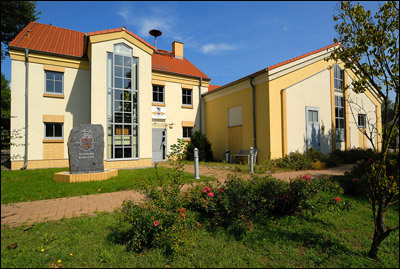
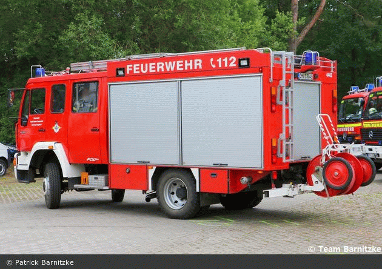
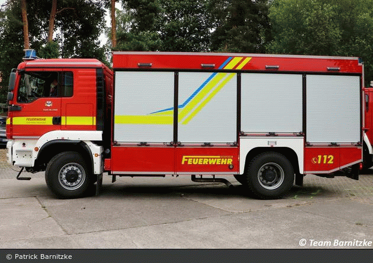
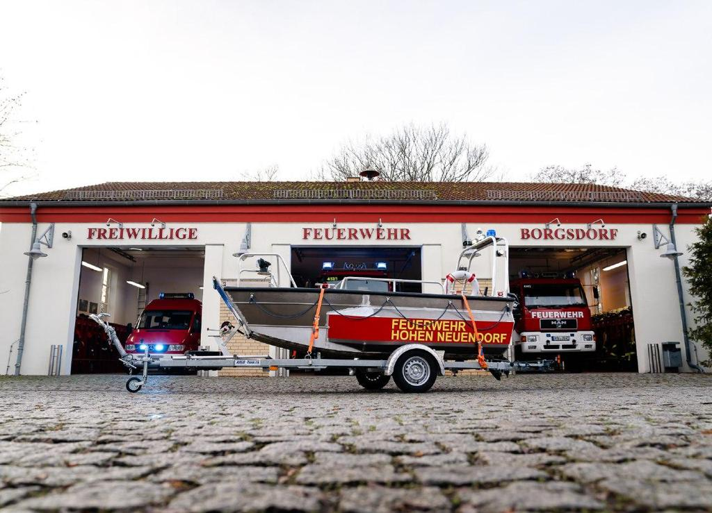

LZ-Borgsdorf
Löschzug 3 Borgsdorf
Wir die Kameraden der Freiwilligen Feuerwehr Borgsdorf sind alle ehrenamtlich tätig und das 24 Stunden am Tag und 365 Tage im Jahr.
Die Freiwillige Feuerwehr Borgsdorf ist der 3. Löschzug neben der Freiwilligen Feuerwehr Hohen Neuendorf (Löschzug 1) und der Freiwilligen Feuerwehr Bergfelde (Löschzug 2), der Stadt Hohen Neuendorf.
Gegründet wurde die Feuerwehr Borgsdorf im Jahre 1904 und hat heute das Depot in der Karl-Marx-Str. 2 im jetzigen Ortsteil Borgsdorf.
Zur Zeit sind in Borgsdorf 53 Kameraden in der Einsatzabteilung.
Dazu kommen 20 Jugendfeuerwehrmitglieder und 7 Kameraden der Ehrenabteilung.
Die Alarmierung der Feuerwehr Borgsdorf läuft zentral über die europäische Notrufnummer 112 in der Leitstelle in Eberswalde.
Neben dem Einsatzgeschehen sind alle Kameraden bestrebt ihr Wissen ständig auszubauen, um für das hohe und umfangreiche Einsatzaufkommen sehr gut vorbereitet zu sein.
In unseren Abendschulungen bilden wir uns alle 14 Tage 2 Std. weiter. Dazu kommen noch die monatlichen technischen Dienste. Zusätzlich finden Lehrgänge auf Kreis- und Landesebene statt.
Neben unseren Pflichtaufgaben liegt es auch in unserem Intresse das kulturelle Leben im Ortsteil Borgsdorf zu fördern. Dazu gehören unsere Veranstaltungen wie z.b. das Osterfeuer, unser "Tag der offenen Tür" und das Weihnachtsbaumschmücken.
Zugführer:
Herr André Weil
Gegründet: 24. Oktober 1904
Einsatzabteilung: 42 Kameraden*innen
Jugendabteilung: 20 Kameraden*innen
Alters- und Ehrenabteilung: 7 Kameraden*innen
Fahrzeuge
LF-16/25 (Florian Oberhavel 04/44-02)RW (Florian Oberhavel 04/52-01)
MTF 3 (Florian Oberhavel 04/19-03)
MZB (Florian Oberhavel 04/79-02)
LF 16/25
Löschgruppenfahrzeug LF 16/25 der FF Borgsdorf,
Stadt Hohen Neuendorf
Fahrgestell: MAN 14.224 LA
Aufbau: FGL-Metz
Baujahr: 2000

RW
Rüstwagen (RW) der FF Borgsdorf,
Stadt Hohen Neuendorf
Fahrgestell: MAN TGM 18.290 4x4
Ausbau: EMPL
Baujahr: 2018

MTF 3
Mannschaftstransportwagen (MTF 3) der FF Borgsdorf,
Stadt Hohen Neuendorf
Fahrgestell: Ford Transit
Ausbau: Schäfer
Baujahr: 2021

MZB
Mehrzweckboot (MZB) der FF Borgsdorf,
Stadt Hohen Neuendorf
Hersteller: Schöne Aluboote
Baujahr: 2019
